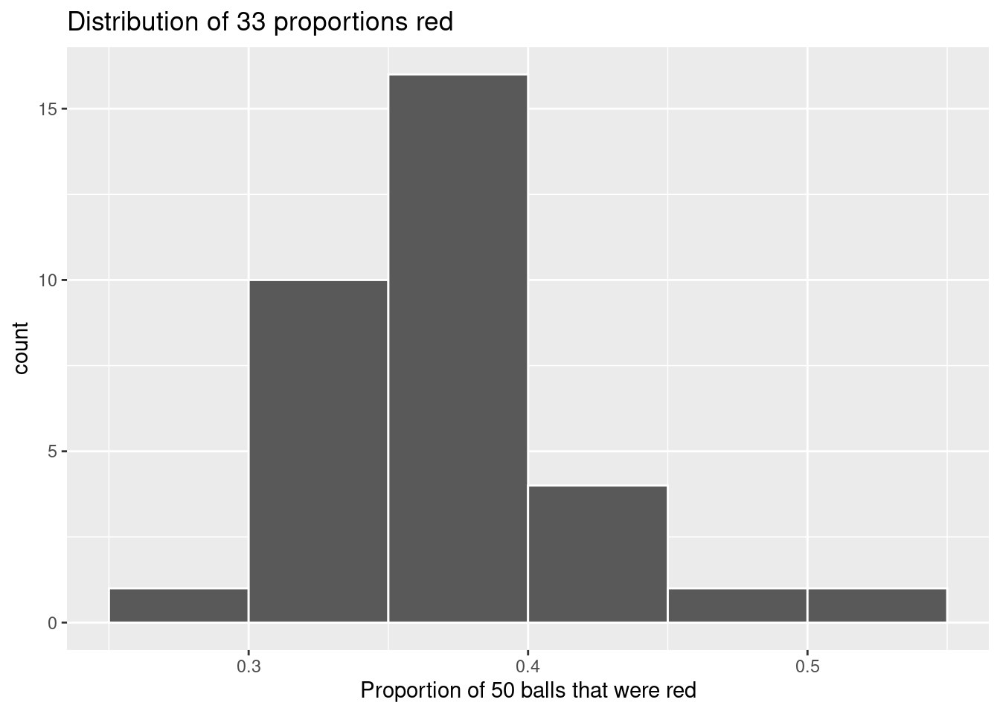
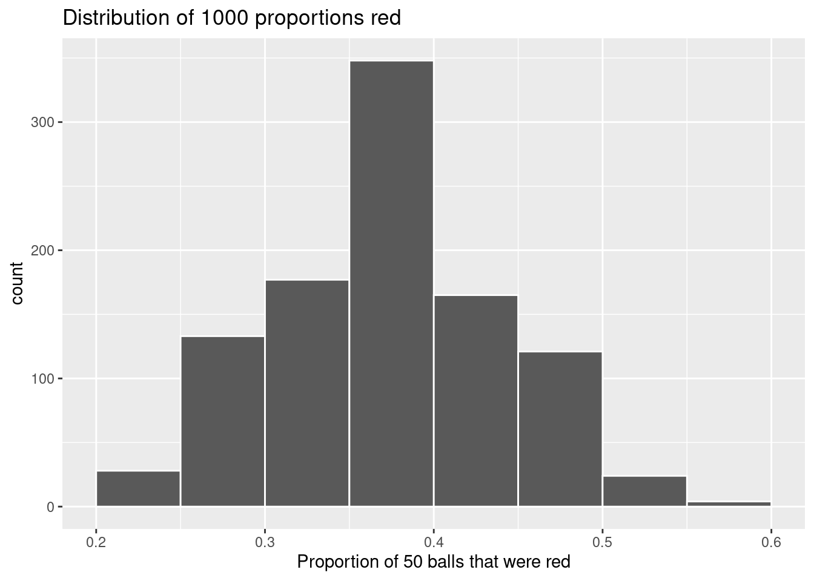
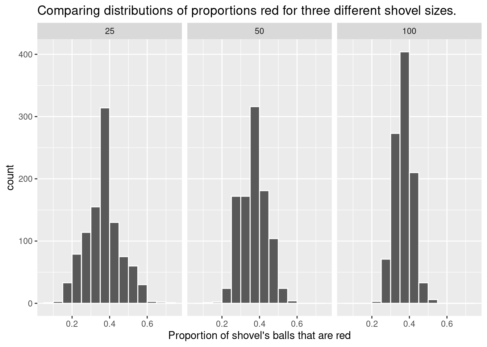
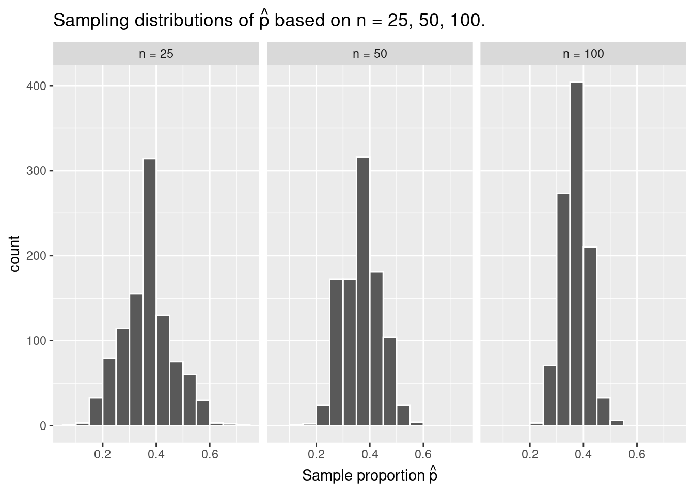
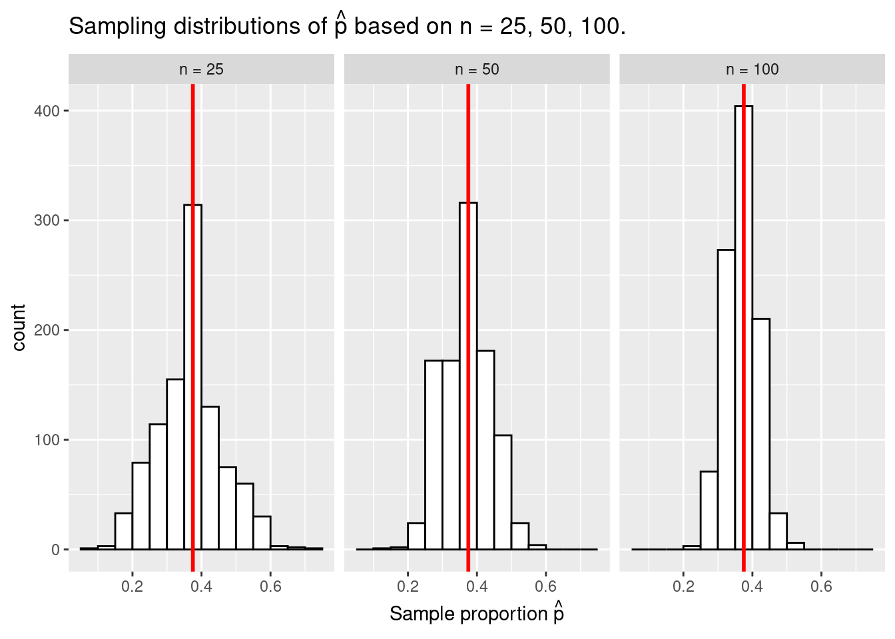

15.1.1 What proportion of this bowl’s balls are red?
Take a look at the bowl in Figure 15.1. It has a certain number of red and a certain number of white balls all of equal size. Furthermore, it appears the bowl has been mixed beforehand, as there does not seem to be any coherent pattern to the spatial distribution of the red and white balls.
Let’s now ask ourselves, what proportion of this bowl’s balls are red?
Figure 15.1: A bowl with red and white balls.
One way to answer this question would be to perform an exhaustive count: remove each ball individually, count the number of red balls and the number of white balls, and divide the number of red balls by the total number of balls. However, this would be a long and tedious process.
15.1.2 Using the shovel once
Instead of performing an exhaustive count, let’s insert a shovel into the bowl as seen in Figure 15.2. Using the shovel, let’s remove \(5 \cdot 10 = 50\) balls, as seen in Figure 15.3.
Figure 15.2: Inserting a shovel into the bowl.
Figure 15.3: Removing 50 balls from the bowl.
Observe that 17 of the balls are red and thus 0.34 = 34% of the shovel’s balls are red. We can view the proportion of balls that are red in this shovel as a guess of the proportion of balls that are red in the entire bowl. While not as exact as doing an exhaustive count of all the balls in the bowl, our guess of 34% took much less time and energy to make.
However, say, we started this activity over from the beginning. In other words, we replace the 50 balls back into the bowl and start over. Would we remove exactly 17 red balls again? In other words, would our guess at the proportion of the bowl’s balls that are red be exactly 34% again? Maybe?
What if we repeated this activity several times following the process shown in Figure 15.3? Would we obtain exactly 17 red balls each time? In other words, would our guess at the proportion of the bowl’s balls that are red be exactly 34% every time? Surely not. Let’s repeat this exercise several times with the help of 33 groups of friends to understand how the value differs with repetition.
15.1.3 Using the shovel 33 times
Each of our 33 groups of friends will do the following:
Use the shovel to remove 50 balls each.
Count the number of red balls and thus compute the proportion of the 50 balls that are red.
Return the balls into the bowl.
Mix the contents of the bowl a little to not let a previous group’s results influence the next group’s.
Each of our 33 groups of friends make note of their proportion of red balls from their sample collected. Each group then notes the proportion of their 50 balls that were red. If we entered each group’s measurements into a dta frame, it would look something like this:
Rows: 33 Columns: 4
── Column specification ────────────────────────────────────────────────────────
Delimiter: ","
chr (1): group
dbl (3): replicate, red_balls, prop_red
ℹ Use `spec()` to retrieve the full column specification for this data.
ℹ Specify the column types or set `show_col_types = FALSE` to quiet this message.
Observe for each group that we have their names, the number of red_balls they obtained, and the corresponding proportion out of 50 balls that were red named prop_red. We also have a replicate variable enumerating each of the 33 groups. We chose this name because each row can be viewed as one instance of a replicated (in other words repeated) activity: using the shovel to remove 50 balls and computing the proportion of those balls that are red.
Figure 15.4 visualizes the distribution of these 33 proportions using a histogram (see Section 8.5 for a refresher on histograms).
Figure 15.4: Histogram of 33 proportions
Observe the following:
At the low end, two groups removed 50 balls from the bowl with proportion red between 0.20 and 0.25.
At the high end, a single group removed 50 balls from the bowl with proportion between 0.45 and 0.5 red.
However, the most frequently occurring proportions are between 0.30 and 0.35 red, right in the middle of the distribution.
The shape of this distribution is approximately bell-shaped.
15.1.4 What did we just do?
What we just demonstrated in this activity is the statistical concept of sampling. We would like to know the proportion of the bowl’s balls that are red. Because the bowl has a large number of balls, performing an exhaustive count of the red and white balls would be time-consuming. We thus extracted a sample of 50 balls using the shovel to make an estimate. Using this sample of 50 balls, we estimated the proportion of the bowl’s balls that are red to be 34%.
Moreover, because we mixed the balls before each use of the shovel, the samples were randomly drawn. Because each sample was drawn at random, the samples were different from each other. Because the samples were different from each other, we obtained the different proportions red observed in Figure 15.4. This is known as the concept of sampling variation.
The purpose of this sampling activity was to develop an understanding of two key concepts relating to sampling:
Understanding the effect of sampling variation.
Understanding the effect of sample size on sampling variation.
15.2 Virtual sampling
In the exercise above, we performed a tactile sampling activity by hand. In other words, we used a physical bowl of balls and a physical shovel. We performed this sampling activity by hand first so that we could develop a firm understanding of the root ideas behind sampling. In this section, we’ll mimic this tactile sampling activity with a virtual sampling activity using a computer. In other words, we’ll use a virtual analog to the bowl of balls and a virtual analog to the shovel.
15.2.1 Using the virtual shovel once
Let’s start by performing the virtual analog of the tactile sampling exercise. We first need a virtual analog of the bowl seen in Figure 15.1. To this end, we have created a CSV file named bowl.csv (you can download this file from Appendix A). The rows of bowl correspond exactly with the contents of the actual bowl.
bowl<-read_csv("data/bowl.csv")
Rows: 2400 Columns: 2
── Column specification ────────────────────────────────────────────────────────
Delimiter: ","
chr (1): color
dbl (1): ball_ID
ℹ Use `spec()` to retrieve the full column specification for this data.
ℹ Specify the column types or set `show_col_types = FALSE` to quiet this message.
head(bowl)
# A tibble: 6 × 2
ball_ID color
<dbl> <chr>
1 1 white
2 2 white
3 3 white
4 4 red
5 5 white
6 6 white
Observe that bowl has 2400 rows, telling us that the bowl contains 2400 equally sized balls. The first variable ball_ID is used as an identification variable; none of the balls in the actual bowl are marked with numbers. The second variable color indicates whether a particular virtual ball is red or white.
Now that we have a virtual analog of our bowl, we next need a virtual analog to the shovel seen in Figure 15.2 to generate virtual samples of 50 balls. We’re going to put together a function called rep_sample_n() (a very similar function is available in the infer package). This function allows us to take repeated, or replicated, samples of size n.
Let’s show an example of this function in action. Let’s first use the tibble() function to manually create a data frame of five fruit called fruit_basket.
Note that the replicate variable indicates which “use” of our virtual shovel that row corresponds to. So rows where replicate=1 correspond to our first “scoop” of fruit, rows where replicate=12 correspond to our second “scoop” of fruit, and so on.
Now let’s return to our bowl and take a single scoop.
# A tibble: 50 × 3
# Groups: replicate [1]
replicate ball_ID color
<int> <dbl> <chr>
1 1 82 red
2 1 1372 red
3 1 1032 white
4 1 141 white
5 1 2019 red
6 1 1507 white
7 1 1606 white
8 1 1380 white
9 1 1765 red
10 1 1652 white
# ℹ 40 more rows
Observe that virtual_shovel has 50 rows corresponding to our virtual sample of size 50. The ball_ID variable identifies which of the 2400 balls from bowl are included in our sample of 50 balls while color denotes its color, and replicate again indicates which “scoop” the row came from.
Let’s compute the proportion of balls in our virtual sample that are red using the dplyr data wrangling verbs you learned in Chapter 7 First, for each of our 50 sampled balls, let’s identify if it is red or not using a test for equality with ==. Let’s create a new Boolean variable is_red using the mutate() function from Section 7.7:
# A tibble: 50 × 4
# Groups: replicate [1]
replicate ball_ID color is_red
<int> <dbl> <chr> <lgl>
1 1 82 red TRUE
2 1 1372 red TRUE
3 1 1032 white FALSE
4 1 141 white FALSE
5 1 2019 red TRUE
6 1 1507 white FALSE
7 1 1606 white FALSE
8 1 1380 white FALSE
9 1 1765 red TRUE
10 1 1652 white FALSE
# ℹ 40 more rows
Observe that for every row where color == "red", the Boolean (logical) value TRUE is returned and for every row where color is not equal to "red", the Boolean FALSE is returned.
Second, let’s compute the number of balls out of 50 that are red using the summarize() function. Recall from Section 7.4 that summarize() takes a data frame with many rows and returns a data frame with a single row containing summary statistics, like the mean() or median(). In this case, we use the sum():
Why does this work? Because R treats TRUE like the number 1 and FALSE like the number 0. So summing the number of TRUEs and FALSEs is equivalent to summing 1’s and 0’s. In the end, this operation counts the number of balls where color is red. In our case, 15 of the 50 balls were red. However, you might have gotten a different number red because of the randomness of the virtual sampling.
Third and lastly, let’s compute the proportion of the 50 sampled balls that are red by dividing num_red by 50:
In other words, 30% of this virtual sample’s balls were red. Let’s make this code a little more compact and succinct by combining the first mutate() and the summarize() as follows:
Great! 30% of virtual_shovel’s 50 balls were red! So based on this particular sample of 50 balls, our guess at the proportion of the bowl’s balls that are red is 30%. But remember from our earlier tactile sampling activity that if we repeat this sampling, we will not necessarily obtain the same value of 30% again. There will likely be some variation. In fact, our 33 groups of friends computed 33 such proportions whose distribution we visualized in Figure 15.4. We saw that these estimates varied. Let’s now perform the virtual analog of having 33 groups of students use the sampling shovel!
15.2.2 Using the virtual shovel 33 times
Recall that in our tactile sampling exercise in Section 15.1, we had 33 groups of students each use the shovel, yielding 33 samples of size 50 balls. We then used these 33 samples to compute 33 proportions. In other words, we repeated/replicated using the shovel 33 times. We can perform this repeated/replicated sampling virtually by once again using our virtual shovel function rep_sample_n(), but by adding the reps = 33 argument. This is telling R that we want to repeat the sampling 33 times.
We’ll save these results in a data frame called virtual_samples. Though we provide a preview of the first 10 rows of virtual_samples in what follows, we highly suggest you scroll through its contents using RStudio’s spreadsheet viewer by running View(virtual_samples).
# A tibble: 1,650 × 3
# Groups: replicate [33]
replicate ball_ID color
<int> <dbl> <chr>
1 1 90 white
2 1 816 red
3 1 1812 white
4 1 1263 white
5 1 1784 white
6 1 1269 red
7 1 978 white
8 1 1386 red
9 1 1501 white
10 1 214 white
# ℹ 1,640 more rows
Observe in the spreadsheet viewer that the first 50 rows of replicate are equal to 1 while the next 50 rows of replicate are equal to 2. This is telling us that the first 50 rows correspond to the first sample of 50 balls while the next 50 rows correspond to the second sample of 50 balls. This pattern continues for all reps = 33 replicates and thus virtual_samples has 33 \(\cdot\) 50 = 1650 rows.
Let’s now take virtual_samples and compute the resulting 33 proportions red. We’ll use the same dplyr verbs as before, but this time with an additional group_by() of the replicate variable. Recall from Section Section 7.6 that by assigning the grouping variable “meta-data” before we summarize(), we’ll obtain 33 different proportions red. We display a preview of the first 10 out of 33 rows:
As with our 33 groups of friends’ tactile samples, there is variation in the resulting 33 virtual proportions red. Let’s visualize this variation in a histogram in Figure 15.5. Note that we add binwidth = 0.05 and boundary = 0.4 arguments as well. Recall that setting boundary = 0.4 ensures a binning scheme with one of the bins’ boundaries at 0.4. Since the binwidth = 0.05 is also set, this will create bins with boundaries at 0.30, 0.35, 0.45, 0.5, etc. as well.

Figure 15.5: Distribution of 33 proportions based on 33 samples of size 50.
Observe that we occasionally obtained proportions red that are less than 30%. On the other hand, we occasionally obtained proportions that are greater than 45%. However, the most frequently occurring proportions were between 35% and 40%. Why do we have these differences in proportions red? Because of sampling variation.
Let’s now compare our virtual results with our tactile results from the previous section in Figure 15.6. Observe that both histograms are somewhat similar in their center and variation, although not identical. These slight differences are again due to random sampling variation. Furthermore, observe that both distributions are somewhat bell-shaped.
Figure 15.6: Comparing 33 virtual and 33 tactile proportions red.
15.2.3 Using the virtual shovel 1000 times
Now say we want to study the effects of sampling variation not for 33 samples, but rather for a larger number of samples, say 1000. We have two choices at this point. We could have our groups of friends manually take 1000 samples of 50 balls and compute the corresponding 1000 proportions. However, this would be a tedious and time-consuming task. This is where computers excel: automating long and repetitive tasks while performing them quite quickly. Thus, at this point we will abandon tactile sampling in favor of only virtual sampling. Let’s once again use the rep_sample_n() function with sample size set to be 50 once again, but this time with the number of replicates reps set to 1000. Be sure to scroll through the contents of virtual_samples in RStudio’s viewer.
# A tibble: 50,000 × 3
# Groups: replicate [1,000]
replicate ball_ID color
<int> <dbl> <chr>
1 1 1575 red
2 1 580 white
3 1 552 white
4 1 969 white
5 1 240 red
6 1 1134 white
7 1 1762 red
8 1 889 red
9 1 1000 red
10 1 538 white
# ℹ 49,990 more rows
Observe that now virtual_samples has 1000 \(\cdot\) 50 = 50,000 rows, instead of the 33 \(\cdot\) 50 = 1650 rows from earlier. Using the same data wrangling code as earlier, let’s take the data frame virtual_samples with 1000 \(\cdot\) 50 = 50,000 rows and compute the resulting 1000 proportions of red balls.
Observe that we now have 1000 replicates of prop_red, the proportion of 50 balls that are red. Using the same code as earlier, let’s now visualize the distribution of these 1000 replicates of prop_red in a histogram in Figure 15.7.
ggplot(virtual_prop_red, aes(x = prop_red)) +geom_histogram(binwidth =0.05, boundary =0.4, color ="white") +labs(x ="Proportion of 50 balls that were red", title ="Distribution of 1000 proportions red")

Figure 15.7: Distribution of 1000 proportions based on 1000 samples of size 50.
Once again, the most frequently occurring proportions of red balls occur between 35% and 40%. Every now and then, we obtain proportions as less than 25% and others greater than 55%. These are rare, however. Furthermore, observe that we now have a much more symmetric and smoother bell-shaped distribution. This distribution is, in fact, well approximated by a normal distribution.
15.2.4 Using different shovels
Now say instead of just one shovel, you have three choices of shovels to extract a sample of balls with: shovels of size 25, 50, and 100.
Figure 15.8: Three shovels to extract three different sample sizes.
If your goal is still to estimate the proportion of the bowl’s balls that are red, which shovel would you choose? In our experience, most people would choose the largest shovel with 100 slots because it would yield the “best” guess of the proportion of the bowl’s balls that are red. Let’s define some criteria for “best” in this subsection.
Using our newly developed tools for virtual sampling, let’s unpack the effect of having different sample sizes! In other words, let’s use rep_sample_n() with size set to 25, 50, and 100, respectively, while keeping the number of repeated/replicated samples at 1000:
Virtually use the appropriate shovel to generate 1000 samples with size balls.
Compute the resulting 1000 replicates of the proportion of the shovel’s balls that are red.
Visualize the distribution of these 1000 proportions red using a histogram.
Run each of the following code segments individually and then compare the three resulting histograms.
# Segment 1: sample size = 25 ------------------------------# 1.a) Virtually use shovel 1000 timesvirtual_samples_25 <- bowl %>%rep_sample_n(size =25, reps =1000)# 1.b) Compute resulting 1000 replicates of proportion redvirtual_prop_red_25 <- virtual_samples_25 %>%group_by(replicate) %>%summarize(red =sum(color =="red")) %>%mutate(prop_red = red /25)# 1.c) Plot distribution via a histogramggplot(virtual_prop_red_25, aes(x = prop_red)) +geom_histogram(binwidth =0.05, boundary =0.4, color ="white") +labs(x ="Proportion of 25 balls that were red", title ="25") # Segment 2: sample size = 50 ------------------------------# 2.a) Virtually use shovel 1000 timesvirtual_samples_50 <- bowl %>%rep_sample_n(size =50, reps =1000)# 2.b) Compute resulting 1000 replicates of proportion redvirtual_prop_red_50 <- virtual_samples_50 %>%group_by(replicate) %>%summarize(red =sum(color =="red")) %>%mutate(prop_red = red /50)# 2.c) Plot distribution via a histogramggplot(virtual_prop_red_50, aes(x = prop_red)) +geom_histogram(binwidth =0.05, boundary =0.4, color ="white") +labs(x ="Proportion of 50 balls that were red", title ="50") # Segment 3: sample size = 100 ------------------------------# 3.a) Virtually using shovel with 100 slots 1000 timesvirtual_samples_100 <- bowl %>%rep_sample_n(size =100, reps =1000)# 3.b) Compute resulting 1000 replicates of proportion redvirtual_prop_red_100 <- virtual_samples_100 %>%group_by(replicate) %>%summarize(red =sum(color =="red")) %>%mutate(prop_red = red /100)# 3.c) Plot distribution via a histogramggplot(virtual_prop_red_100, aes(x = prop_red)) +geom_histogram(binwidth =0.05, boundary =0.4, color ="white") +labs(x ="Proportion of 100 balls that were red", title ="100")
For easy comparison, we present the three resulting histograms in a single row with matching x and y axes in Figure 15.9.

Figure 15.9: Comparing the distributions of proportion red for different sample sizes.
Observe that as the sample size increases, the variation of the 1000 replicates of the proportion of red decreases. In other words, as the sample size increases, there are fewer differences due to sampling variation and the distribution centers more tightly around the same value. Eyeballing Figure 15.9, all three histograms appear to center around roughly 40%.
We can be numerically explicit about the amount of variability in our three sets of 1000 values of prop_red using the standard deviation (Section 11.2.5). For all three sample sizes, let’s compute the standard deviation of the 1000 proportions red by running the following data wrangling code that uses the sd() summary function.
# n = 25virtual_prop_red_25 %>%summarize(sd =sd(prop_red))# n = 50virtual_prop_red_50 %>%summarize(sd =sd(prop_red))# n = 100virtual_prop_red_100 %>%summarize(sd =sd(prop_red))
Let’s compare these three measures of distributional variation in Table 15.1.
Table 15.1: Comparing standard deviations of proportions red for three different shovels
Number of slots in shovel
Standard deviation of proportions red
25
0.096
50
0.066
100
0.047
As we observed in Figure 15.9, as the sample size increases, the variation decreases. In other words, there is less variation in the 1000 values of the proportion red. So as the sample size increases, our guesses at the true proportion of the bowl’s balls that are red get more precise.
15.3 Sampling framework
In both our tactile and our virtual sampling activities, we used sampling for the purpose of estimation. We extracted samples in order to estimate the proportion of the bowl’s balls that are red. We used sampling as a less time-consuming approach than performing an exhaustive count of all the balls. Our virtual sampling activity built up to the results shown in Figure 15.9 and Table 15.1: comparing 1000 proportions red based on samples of size 25, 50, and 100. This was our first attempt at understanding two key concepts relating to sampling for estimation:
The effect of sampling variation on our estimates.
The effect of sample size on sampling variation.
Now that you have built some intuition relating to sampling, let’s now attach words and labels to the various concepts we’ve explored so far. Specifically in the next section, we’ll introduce terminology and notation as well as statistical definitions related to sampling. This will allow us to succinctly summarize and refer to the ideas behind sampling for the rest of this book.
15.3.1 Terminology and notation
Let’s now attach words and labels to the various sampling concepts we’ve seen so far by introducing some terminology and mathematical notation. While they may seem daunting at first, we’ll make sure to tie each of them to sampling bowl activities you performed earlier. Furthermore, throughout this book we’ll give you plenty of opportunity for practice, as the best method for mastering these terms is repetition.
The first set of terms and notation relate to populations:
A population is a collection of individuals or observations we are interested in. This is also commonly denoted as a study population. We mathematically denote the population’s size using upper-case \(N\).
A population parameter is some numerical summary about the population that is unknown but you wish you knew. For example, when this quantity is a mean like the average height of all Canadians, the population parameter of interest is the population mean.
A census is an exhaustive enumeration or counting of all \(N\) individuals in the population. We do this in order to compute the population parameter’s value exactly. Of note is that as the number \(N\) of individuals in our population increases, conducting a census gets more expensive (in terms of time, energy, and money).
So in our sampling activities, the population is the collection of \(N\) = 2400 identically sized red and white balls in the bowl shown in Figure 15.1. Recall that we also represented the bowl “virtually” in the data frame bowl:
head(bowl)
# A tibble: 6 × 2
ball_ID color
<dbl> <chr>
1 1 white
2 2 white
3 3 white
4 4 red
5 5 white
6 6 white
The population parameter here is the proportion of the bowl’s balls that are red. Whenever we’re interested in a proportion of some value in a population, the population parameter has a specific name: the population proportion. We denote population proportions with the letter \(p\). We’ll see later on that we can also consider other types of population parameters, like population means and population regression slopes.
In order to compute this population proportion \(p\) exactly, we need to first conduct a census by going through all \(N\) = 2400 and counting the number that are red. We then divide this count by 2400 to obtain the proportion red.
You might be now asking yourself: “Wait. I understand that performing a census on the actual bowl would take a long time. But can’t we conduct a ‘virtual’ census using the virtual bowl?” You are absolutely correct! In fact when the authors of this book created the bowl data frame, they made its contents match the contents of actual bowl not by doing a census, but by reading the contents written on the box the bowl came in!
Let’s conduct this “virtual” census by using the same dplyr verbs you used earlier to count the number of balls that are red:
bowl %>%summarize(red =sum(color =="red"))
# A tibble: 1 × 1
red
<int>
1 900
Since 900 of the 2400 are red, the proportion is 900/2400 = 0.375 = 37.5. So we know the value of the population parameter: in our case, the population proportion \(p\) is equal to 0.375.
At this point, you might be further asking yourself: “If we had a way of knowing that the proportion of the balls that are red is 37.5, then why did we do any sampling?” Great question! Normally, you wouldn’t do any sampling! However, the sampling activities we did this chapter are merely simulations of how sampling is done in real-life! We perform these simulations in order to study:
The effect of sampling variation on our estimates.
The effect of sample size on sampling variation.
In real-life sampling, not only will the population size \(N\) be very large making a census expensive, but sometimes we won’t even know how big the population is! For now however, we press on with our next set of terms and notation.
The second set of terms and notation relate to samples:
Sampling is the act of collecting a sample from the population, which we generally only do when we can’t perform a census. We mathematically denote the sample size using lower case \(n\), as opposed to upper case \(N\) which denotes the population’s size. Typically the sample size \(n\) is much smaller than the population size \(N\). Thus sampling is a much cheaper alternative than performing a census.
A point estimate, also known as a sample statistic, is a summary statistic computed from a sample that estimates the unknown population parameter.
So previously we conducted sampling using a shovel with 50 slots to extract samples of size \(n\) = 50. To perform the virtual analog of this sampling, recall that we used the rep_sample_n() function as follows:
# A tibble: 50 × 3
# Groups: replicate [1]
replicate ball_ID color
<int> <dbl> <chr>
1 1 512 white
2 1 637 white
3 1 1621 white
4 1 183 red
5 1 2389 white
6 1 500 white
7 1 2029 white
8 1 2243 white
9 1 1374 red
10 1 1394 red
# ℹ 40 more rows
Using the sample of 50 balls contained in virtual_shovel, we generated an estimate of the proportion of the bowl’s balls that are red prop_red
So in our case, the value of prop_red is the point estimate of the population proportion \(p\) since it estimates the latter’s value. Furthermore, this point estimate has a specific name when considering proportions: the sample proportion. It is denoted using \(\widehat{p}\) because it is a common convention in statistics to use a “hat” symbol to denote point estimates.
The third set of terms relate to sampling methodology: the method used to collect samples. You’ll see here and throughout the rest of your book that the way you collect samples directly influences their quality.
A sample is said to be representative if it roughly “looks like” the population. In other words, if the sample’s characteristics are a “good” representation of the population’s characteristics.
We say a sample is generalizable if any results based on the sample can generalize to the population. In other words, if we can make “good” guesses about the population using the sample.
We say a sampling procedure is biased if certain individuals in a population have a higher chance of being included in a sample than others. We say a sampling procedure is unbiased if every individual in a population has an equal chance of being sampled.
We say a sample of \(n\) balls extracted using our shovel is representative of the population if it’s contents “roughly resemble” the contents of the bowl. If so, then the proportion of the shovel’s balls that are red can generalize to the proportion of the bowl’s \(N\) = 2400 balls that are red. Or expressed differently, \(\widehat{p}\) is a “good guess” of \(p\). Now say we cheated when using the shovel and removed a number of white balls in favor of red balls. Then this sample would be biased towards red balls, and thus the sample would no longer be representative of the bowl.
The fourth and final set of terms and notation relate to the goal of sampling:
One way to ensure that a sample is unbiased and representative of the population is by using random sampling
Inference is the act of “making a guess” about some unknown. Statistical inference is the act of making a guess about a population using a sample.
In our case, since the rep_sample_n() function uses your computer’s random number generator, we were in fact performing random sampling.
Let’s now put all four sets of terms and notation together, keeping our sampling activities in mind:
Since we extracted a sample of \(n\) = 50 balls at random, we mixed all of the equally sized balls before using the shovel, then
the contents of the shovel are unbiased and representative of the contents of the bowl, thus
any result based on the shovel can generalize to the bowl, thus
the sample proportion \(\widehat{p}\) of the \(n\) = 50 balls in the shovel that are red is a “good guess” of the population proportion \(p\) of the bowl’s \(N\) = 2400 balls that are red, thus
instead of conducting a census of the 2400 balls in the bowl, we can infer about the bowl using the sample from the shovel.
What you have been performing is statistical inference. This is one of the most important concepts in all of statistics. So much so, we included this term in the title of our book: “Statistical Inference via Data Science”. More generally speaking,
If the sampling of a sample of size \(n\) is done at random, then
the sample is unbiased and representative of the population of size \(N\), thus
any result based on the sample can generalize to the population, thus
the point estimate is a “good guess” of the unknown population parameter, thus
instead of performing a census, we can infer about the population using sampling.
15.3.2 Statistical definitions
To further attach words and labels to the various sampling concepts we’ve seen so far, we also introduce some important statistical definitions related to sampling. As a refresher of our 1000 repeated/replicated virtual samples of size \(n\) = 25, \(n\) = 50, and \(n\) = 100 in Section Section 15.2, let’s display Figure 15.9 again as Figure 15.10.
Figure 15.10: Previously seen three distributions of the sample proportion \(\widehat{p}\).
These types of distributions have a special name: sampling distributions of point estimates. Their visualization displays the effect of sampling variation on the distribution of any point estimate, in this case, the sample proportion \(\widehat{p}\). Using these sampling distributions, for a given sample size \(n\), we can make statements about what values we can typically expect. Unfortunately, the term sampling distribution is often confused with a sample’s distribution which is merely the distribution of the values in a single sample.
For example, observe the centers of all three sampling distributions: they are all roughly centered around 0.4 = 40%. Furthermore, observe that while we are somewhat likely to observe sample proportions of red balls of 0.2 = 20% when using the shovel with 25 slots, we will almost never observe a proportion of 20% when using the shovel with 100 slots. Observe also the effect of sample size on the sampling variation. As the sample size \(n\) increases from 25 to 50 to 100, the variation of the sampling distribution decreases and thus the values cluster more and more tightly around the same center of around 40%. We quantified this variation using the standard deviation of our sample proportions in Table 15.1, which we display again as Table 15.2:
Table 15.2: Previously seen comparing standard deviations of proportions red for three different shovels
Number of slots in shovel
Standard deviation of proportions red
25
0.096
50
0.066
100
0.047
So as the sample size increases, the standard deviation of the proportion of red balls decreases. This type of standard deviation has another special name: standard error of a point estimate. Standard errors quantify the effect of sampling variation induced on our estimates. In other words, they quantify how much we can expect different proportions of a shovel’s balls that are red to vary from one sample to another sample to another sample, and so on. As a general rule, as sample size increases, the standard error decreases.
Similarly to confusion between sampling distributions with a sample’s distribution, people often confuse the standard error with the standard deviation. This is especially the case since a standard error is itself a kind of standard deviation. The best advice we can give is that a standard error is merely a kind of standard deviation: the standard deviation of any point estimate from sampling. In other words, all standard errors are standard deviations, but not every standard deviation is necessarily a standard error.
To help reinforce these concepts, let’s re-display Figure 15.9 but using our new terminology, notation, and definitions relating to sampling in Figure 15.11.

Figure 15.11: Three sampling distributions of the sample proportion \(\widehat{p}\).
Furthermore, let’s re-display Table 15.1 but using our new terminology, notation, and definitions relating to sampling in Table 15.3.
Table 15.3: Standard errors of the sample proportion based on sample sizes of 25, 50, and 100
Sample size (n)
Standard error of $\widehat{p}$
n = 25
0.096
n = 50
0.066
n = 100
0.047
Remember the key message of this last table: that as the sample size \(n\) goes up, the “typical” error of your point estimate will go down, as quantified by the standard error.
15.3.3 The moral of the story
Let’s recap this section so far. We’ve seen that if a sample is generated at random, then the resulting point estimate is a “good guess” of the true unknown population parameter. In our sampling activities, since we made sure to mix the balls first before extracting a sample with the shovel, the resulting sample proportion \(\widehat{p}\) of the shovel’s balls that were red was a “good guess” of the population proportion \(p\) of the bowl’s balls that were red.
However, what do we mean by our point estimate being a “good guess”? Sometimes, we’ll get an estimate that is less than the true value of the population parameter, while at other times we’ll get an estimate that is greater. This is due to sampling variation. However, despite this sampling variation, our estimates will “on average” be correct and thus will be centered at the true value. This is because our sampling was done at random and thus in an unbiased fashion.
In our sampling activities, sometimes our sample proportion \(\widehat{p}\) was less than the true population proportion \(p\), while at other times it was greater. This was due to the sampling variability. However, despite this sampling variation, our sample proportions \(\widehat{p}\) were “on average” correct and thus were centered at the true value of the population proportion \(p\). This is because we mixed our bowl before taking samples and thus the sampling was done at random and thus in an unbiased fashion. This is also known as having an accurate estimate.
Recall from earlier that the value of the population proportion \(p\) of the \(N\) = 2400 balls in the bowl was 900/2400 = 0.375 = 37.5. We computed this value by performing a virtual census of bowl. Let’s re-display our sampling distributions from Figure 15.9 and Figure 15.11, but now with a vertical red line marking the true population proportion \(p\) of balls that are red = 37.5 in Figure 15.12. We see that while there is a certain amount of error in the sample proportions \(\widehat{p}\) for all three sampling distributions, on average the \(\widehat{p}\) are centered at the true population proportion red \(p\).
Warning: Using `size` aesthetic for lines was deprecated in ggplot2 3.4.0.
ℹ Please use `linewidth` instead.

Figure 15.12: Three sampling distributions with population proportion \(p\) marked by vertical line.
We also saw in this section that as your sample size \(n\) increases, your point estimates will vary less and less and be more and more concentrated around the true population parameter. This variation is quantified by the decreasing standard error. In other words, the typical error of your point estimates will decrease. In our sampling exercise, as the sample size increased, the variation of our sample proportions \(\widehat{p}\) decreased. You can observe this behavior in Figure 15.12. This is also known as having a precise estimate.
So random sampling ensures our point estimates are accurate, while on the other hand having a large sample size ensures our point estimates are precise. While the terms “accuracy” and “precision” may sound like they mean the same thing, there is a subtle difference. Accuracy describes how “on target” our estimates are, whereas precision describes how “consistent” our estimates are. Figure 15.13 illustrates the difference.
Figure 15.13: Comparing accuracy and precision.
At this point, you might be asking yourself: “Why did we take 1000 repeated samples of size n = 25, 50, and 100? Shouldn’t we be taking only one sample that’s as large as possible?”. If you did ask yourself these questions, your suspicion is correct! Recall from earlier when we asked ourselves “If we had a way of knowing that the proportion of the balls that are red is 37.5, then why did we do any sampling?” Similarly, we took 1000 repeated samples as a simulation of how sampling is done in real-life! We used these simulations to study:
The effect of sampling variation on our estimates.
The effect of sample size on sampling variation.
This is not how sampling is done in real life! In a real-life scenario, we wouldn’t take 1000 repeated/replicated samples, but rather a single sample that’s as large as we can afford.
15.4 Central Limit Theorem
This chapter began with (virtual) access to a large bowl of balls (our population) and a desire to figure out the proportion of red balls. Despite having access to this population, in reality, you almost never will have access to the population, either because the population is too large, ever changing, or too expensive to take a census of. Accepting this reality means accepting that we need to use statistical inference.
In Section 15.3.1, we stated that “statistical inference is the act of making a guess about a population using a sample.” But how do we do this inference? In the previous section, we defined the sampling framework only to state that in reality we take one large sample, instead of many samples as done in the sampling framework (which we modeled physically by taking many samples from the bowl).
In reality, we take only one sample and use that one sample to make statements about the population parameter. This ability of making statements about the population is allowable by a famous theorem, or mathematically proven truth, called the Central Limit Theorem. What you visualized in Figure 15.9 and Figure 15.11 and summarized in Table 15.1 and Table 15.3 was a demonstration of this theorem. It loosely states that when sample means are based on larger and larger sample sizes, the sampling distribution of these sample means becomes both more and more normally shaped and more and more narrow.
In other words, as our sample size gets larger (1) the sampling distribution of a point estimate (like a sample proportion) increasingly follows a normal distribution and (2) the variation of these sampling distributions gets smaller, as quantified by their standard errors.
Here’s what is so surprising about the Central Limit Theorem: regardless of the shape of the underlying population distribution, the sampling distribution of means (such as the sample mean of bunny weights or the sample mean of the length of dragon wings) and proportions (such as the sample proportion red in our shovels) will be normal. Normal distributions are defined by where they are centered and how wide they are, and the Central Limit Theorem gives us both:
The sampling distribution of the point estimate is centered at the true population parameter
We have an estimate for how wide the sampling distribution of the point estimate is, given by the standard error
What the Central Limit Theorem creates for us is a ladder between a single sample and the population. By the Central Limit Theorem, we can say that (1) our sample’s point estimate is drawn from a normal distribution centered at the true population parameter and (2)that the width of that normal distribution is governed by the standard error of our point estimate. Relating this to our bowl, if we pull one sample and get the sample proportion of red balls \(\widehat{p}\), this value of \(\widehat{p}\) is drawn from the normal curve centered at the true population proportion of red balls \(p\) with the computed standard error.
15.5 Conclusion
15.5.1 Sampling scenarios
In this chapter, we performed both tactile and virtual sampling exercises to infer about an unknown proportion. We also presented a case study of sampling in real life with polls. In each case, we used the sample proportion \(\widehat{p}\) to estimate the population proportion \(p\). However, we are not just limited to scenarios related to proportions. In other words, we can use sampling to estimate other population parameters using other point estimates as well. We present four more such scenarios in Table 15.4).
Table 15.4: Scenarios of sampling for inference
Scenario
Population parameter
Notation
Point estimate
Symbol(s)
1
Population proportion
$p$
Sample proportion
$\widehat{p}$
2
Population mean
$\mu$
Sample mean
$\overline{x}$ or $\widehat{\mu}$
3
Difference in population proportions
$p_1 - p_2$
Difference in sample proportions
$\widehat{p}_1 - \widehat{p}_2$
4
Difference in population means
$\mu_1 - \mu_2$
Difference in sample means
$\overline{x}_1 - \overline{x}_2$ or $\widehat{\mu}_1 - \widehat{\mu}_2$
5
Population regression slope
$\beta_1$
Fitted regression slope
$b_1$ or $\widehat{\beta}_1$
15.5.2 Theory-based standard-errors
There exists in many cases a formula that approximates the standard error! In the case of our bowl where we used the sample proportion red \(\widehat{p}\) to estimate the proportion of the bowl’s balls that are red, the formula that approximates the standard error for the sample proportion \(\widehat{p}\) is:
For example, say you sampled \(n = 50\) balls and observed 21 red balls. This equals a sample proportion \(\widehat{p}\) of 21/50 = 0.42. So, using the formula, an approximation of the standard error of \(\widehat{p}\) is
Say instead you sampled \(n = 100\) balls and observed 42 red balls. This once again equals a sample proportion \(\widehat{p}\) of 42/100 = 0.42. However using the formula, an approximation of the standard error of \(\widehat{p}\) is now
\[\text{SE}_{\widehat{p}} \approx \sqrt{\frac{0.42(1-0.42)}{100}} = \sqrt{0.002436} = 0.0494\] Observe that the standard error has gone down from 0.0698 to 0.0494. In other words, the “typical” error of our estimates using \(n\) = 100 will go down relative to \(n\) = 50 and hence be more precise. Recall that we illustrated the difference between accuracy and precision of estimates in Figure 15.13.
The key observation to make in the formula is that there is an \(n\) in the denominator. As the sample size \(n\) increases, the standard error decreases. We’ve demonstrated this fact using our virtual shovels in Section 15.3.3.
Furthermore, this is one of the key messages of the Central Limit Theorem we saw in Section 15.4: as the sample size \(n\) increases, the distribution of averages gets narrower as quantified by the standard deviation of the sampling distribution of the sample mean. This standard deviation of the sampling distribution of the sample means in turn has a special name: the standard error of the sample mean.
Why is this formula true? Unfortunately, we don’t have the tools at this point to prove this; you’ll need to take a more advanced course in probability and statistics. (It is related to the concepts of Bernoulli and Binomial Distributions. You can read more about its derivation here if you like.)